Empire Stone × Empire Granite — QA
Test Cases: Product/Material Setup
เรื่องราวเดียวต่อเนื่องกันตั้งแต่ต้นจนจบของการตั้งค่าสินค้าใหม่ผ่าน Quick Material Setup Wizard — ไม่ใช่การเทสฟีเจอร์แยกส่วน และไม่มีข้อไหนเป็นการดักฟิลด์บังคับ/error — เดินตามได้เองแม้ไม่ใช่ technical user ทุกตัวเลข "ตัวอย่างจริง" ในเอกสารนี้มาจากการรันจริง 1 รอบบน eg-tst (2026-09-09) ไม่ใช่ตัวเลขสมมติ เอกสารนี้เป็น precondition ของ Golden Path Mode 1-5 ทุกฉบับ
12Test Case ทั้งหมด
6หมวด
8High Priority
4Medium Priority
0Low Priority
P1. เปิด Wizard + ข้อมูลพื้นฐาน
เริ่มสร้าง Material ใหม่ · 2 test cases
| TC ID | Scenario | Precondition | Steps | ข้อมูลตัวอย่าง | Expected Result | Priority | หน้าจอจริง |
|---|---|---|---|---|---|---|---|
| TC-PS-01 | เปิด Quick Material Setup Wizard | - |
|
- | หน้าต่าง Quick Material Setup เปิดขึ้น พร้อมฟอร์มข้อมูลหิน/Slab/Finish/Block/Finished Good ให้กรอกทีเดียวจบ | Medium | 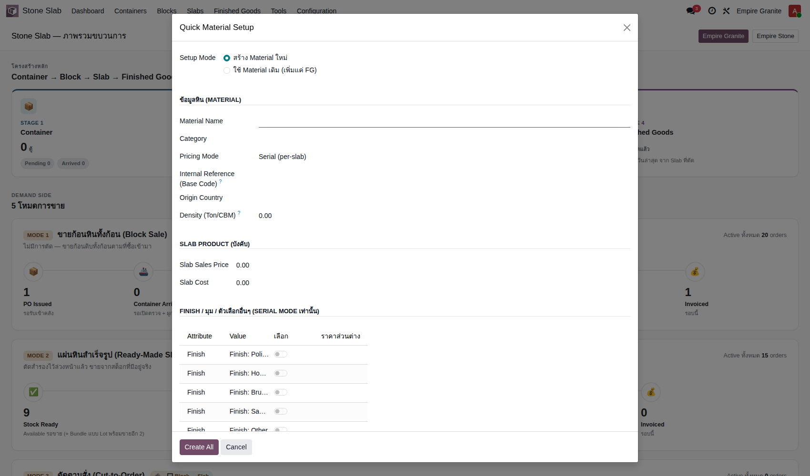 |
| TC-PS-02 | กรอกข้อมูลพื้นฐานของ Material | ทำ TC-PS-01 เสร็จแล้ว |
|
Material Name = SY-TST-Onyx-Rosa Category = Marble Pricing Mode = Serial (per-slab) Base Code = SYTST02 Origin Country = Italy Density = 2.65 |
กรอกครบทุกช่องโดยไม่มี error — Base Code จะถูกใช้ตั้งรหัสสินค้าให้อัตโนมัติตอนกด Create All ทีหลัง | High | 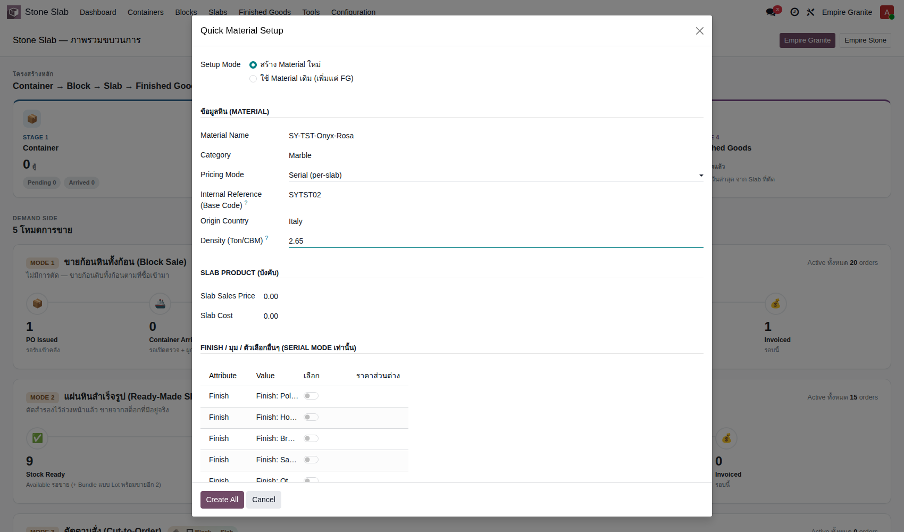 |
P2. ตั้งราคา Slab + เลือก Finish/Edge
เฉพาะ Pricing Mode = Serial · 1 test case
| TC ID | Scenario | Precondition | Steps | ข้อมูลตัวอย่าง | Expected Result | Priority | หน้าจอจริง |
|---|---|---|---|---|---|---|---|
| TC-PS-03 | ตั้งราคาขาย/ต้นทุน Slab และเลือก Finish/Edge ที่จะขาย แต่ละ Attribute (Finish, มุม, ...) จะโชว์ทุกค่าที่ทีมงานตั้งไว้ล่วงหน้าให้ติ๊กเลือก — ค่าแรกที่ติ๊กของแต่ละ Attribute ถือเป็นค่ามาตรฐานของ Material นี้ (ไม่มีรหัสต่อท้าย) ค่าอื่นที่ติ๊กเพิ่มจะกลายเป็น Variant แยกพร้อมราคาส่วนต่างของตัวเอง |
ทำ TC-PS-02 เสร็จแล้ว |
|
Slab Sales Price = 4,500 Slab Cost = 2,800 ติ๊ก Finish = Polished (ราคาส่วนต่าง 0) ติ๊ก มุม = ไม่ลบมุม (ราคาส่วนต่าง 0) |
ติ๊กสำเร็จ เห็นสวิตช์เปลี่ยนเป็นสีเขียวและช่องราคาส่วนต่างเปิดให้กรอกเฉพาะแถวที่ติ๊ก | High | 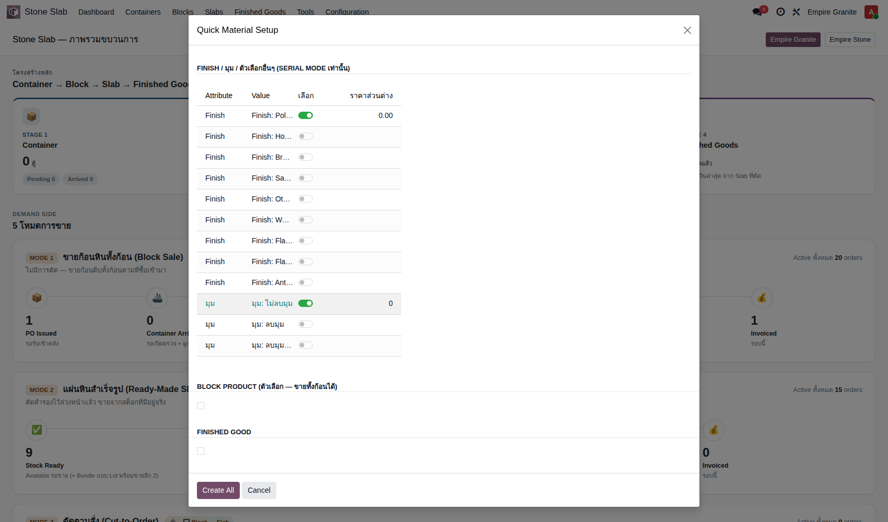 |
P3. ตั้งค่า Block + Finished Good (ทางเลือก)
เปิดใช้เมื่อวัสดุนี้ขายทั้งก้อนได้ และ/หรือ ผลิตสินค้าสำเร็จรูปได้ · 1 test case
| TC ID | Scenario | Precondition | Steps | ข้อมูลตัวอย่าง | Expected Result | Priority | หน้าจอจริง |
|---|---|---|---|---|---|---|---|
| TC-PS-04 | เปิดใช้งาน Block Product และ Finished Good พร้อมตั้งราคา | ทำ TC-PS-03 เสร็จแล้ว |
|
Block Sales Price = 17,500 Block Cost = 15,000 FG Category = Stone FG - Countertop FG Product Name = SY-TST-Onyx-Rosa - Countertop FG Sales Price = 8,500 FG Cost = 5,200 |
กรอกครบทุกช่องโดยไม่มี error ฟอร์มพร้อมกด Create All | Medium | 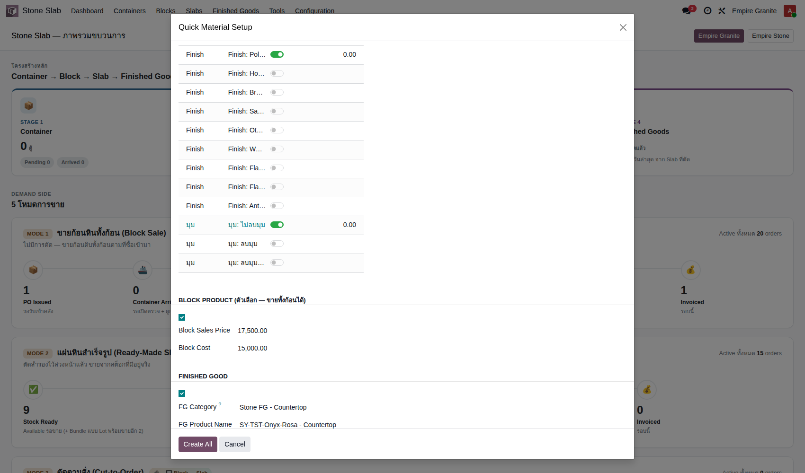 |
P4. สร้างและตรวจผลลัพธ์
กด Create All แล้วตรวจว่าทุกอย่างถูกสร้างจริง · 4 test cases
| TC ID | Scenario | Precondition | Steps | ข้อมูลตัวอย่าง | Expected Result | Priority | หน้าจอจริง |
|---|---|---|---|---|---|---|---|
| TC-PS-05 | กด Create All ยืนยันสร้าง Material ✅ เคยเจอบั๊กจริงตรงนี้ (แก้แล้ว 2026-09-09): กด Create All แล้ว error "Missing required value for the field 'Attribute'" ทุกครั้งที่เลือก Serial mode — เป็นช่องโหว่จริงของหน้าจอ (ไม่ใช่ผู้ใช้กรอกผิด) แก้ไขที่โค้ดแล้ว ตอนนี้กดผ่านได้ปกติ |
ทำ TC-PS-01 ถึง TC-PS-04 เสร็จแล้ว |
|
- | สร้างสำเร็จ เปิดหน้า Material ใหม่ให้อัตโนมัติ เห็น Slab Product, Block Product, Finished Good ที่สร้างครบทั้ง 3 รายการในตาราง "Linked Products" | High | 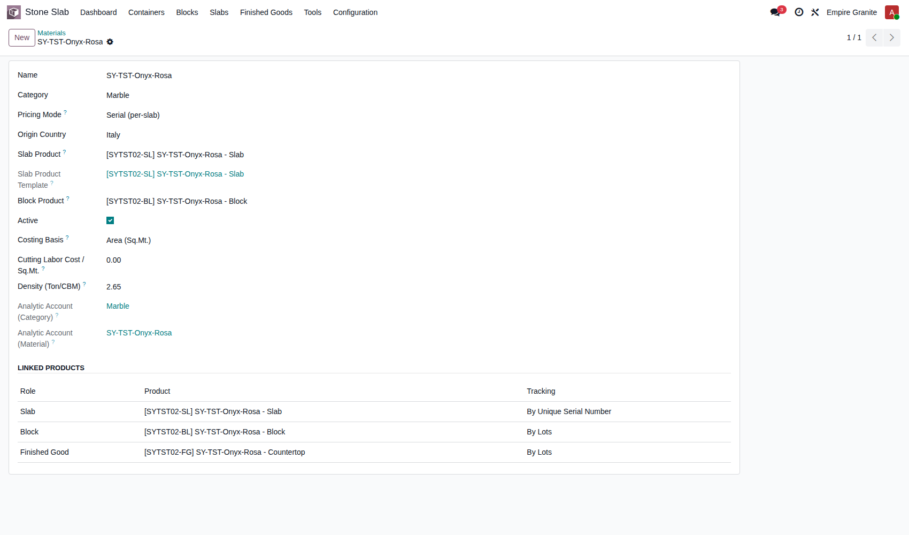 |
| TC-PS-06 | ตรวจสอบ Slab Product ที่ถูกสร้าง | ทำ TC-PS-05 เสร็จแล้ว |
|
- | เปิดหน้าสินค้า [SYTST02-SL] SY-TST-Onyx-Rosa - Slab — Sales Price 4,500, Cost 2,800, Track Inventory = By Unique Serial Number, Category = Stone (ไม่ใช่ค่าว่าง) | High | 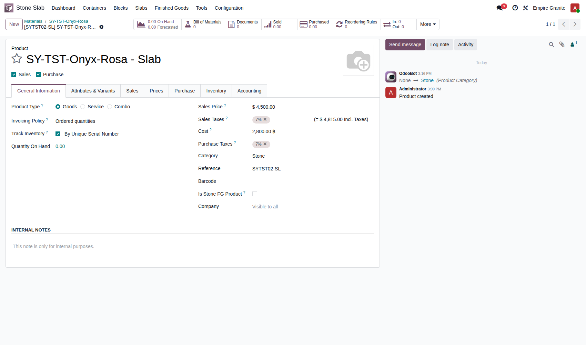 |
| TC-PS-07 | ตรวจสอบ Block Product ที่ถูกสร้าง | ทำ TC-PS-05 เสร็จแล้ว |
|
ค้นหา = SYTST02-BL | เปิดหน้าสินค้า [SYTST02-BL] SY-TST-Onyx-Rosa - Block — Sales Price 17,500, Cost 15,000, Track Inventory = By Lots, Category = Stone | High | 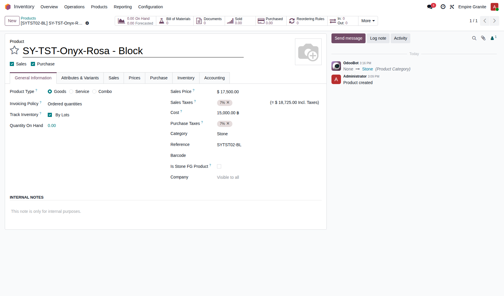 |
| TC-PS-08 | ตรวจสอบ Analytic Account ที่ถูกสร้างอัตโนมัติ ✨ Analytic-Architecture (2026-09-09): ทุก Material ใหม่จะได้ Analytic Account 2 ตัวอัตโนมัติ — ตัวหนึ่งใช้ร่วมกันทั้งหมวดวัสดุ (เช่น Marble) อีกตัวเฉพาะวัสดุนี้เป๊ะๆ ไม่ต้องสร้างเอง |
ทำ TC-PS-05 เสร็จแล้ว |
|
- | เห็นทั้งสองช่องมีค่าให้อัตโนมัติ — ตัวอย่างจริง: Category = Marble (ใช้ร่วมกับ Material หมวด Marble อื่นๆ ทุกตัว), Material = SY-TST-Onyx-Rosa (เฉพาะตัวนี้) | Medium | ภาพเดียวกับ TC-PS-05 — เห็นทั้งช่อง Analytic Account ทั้งสองในภาพเดียวกันแล้ว |
P5. พร้อมใช้งานจริง
ยืนยันว่าสินค้าใหม่ซื้อ-ขายได้จริงทันที · 2 test cases
| TC ID | Scenario | Precondition | Steps | ข้อมูลตัวอย่าง | Expected Result | Priority | หน้าจอจริง |
|---|---|---|---|---|---|---|---|
| TC-PS-09 | ยืนยันว่าสินค้าใหม่เลือกได้ในหน้าสร้าง PO | ทำ TC-PS-05 เสร็จแล้ว |
|
ค้นหา = SYTST02 | เห็นสินค้าทั้ง 3 ตัว (Block/Countertop/Slab) ขึ้นในรายการให้เลือกทันที ไม่ต้องรอตั้งค่าอะไรเพิ่ม | High | 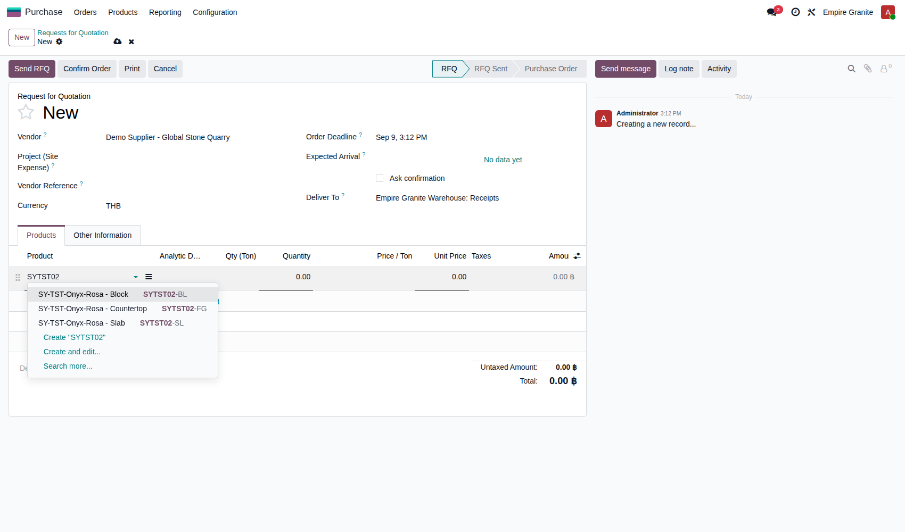 |
| TC-PS-10 | ยืนยันว่าสินค้าใหม่เลือกได้ในหน้าสร้าง SO | ทำ TC-PS-05 เสร็จแล้ว |
|
ค้นหา = SYTST02 | เห็นสินค้าทั้ง 3 ตัวขึ้นในรายการให้เลือกทันทีเช่นกัน | High | 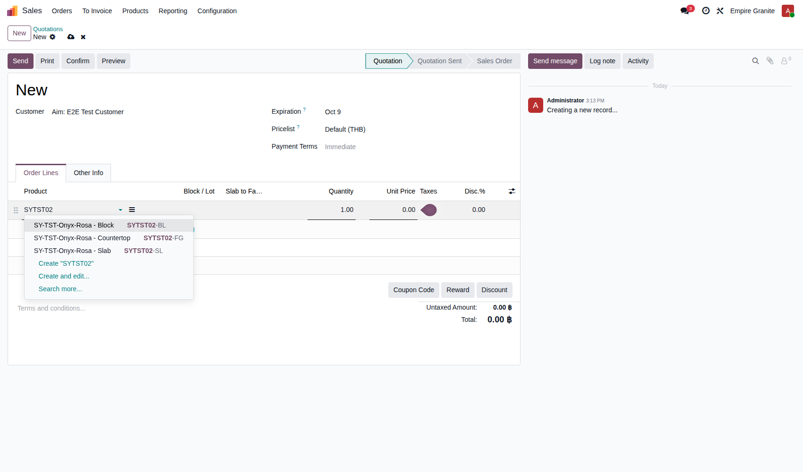 |
P6. เพิ่ม Finished Good ให้ Material เดิม
เส้นทางลัดที่ 2 ของ wizard — ไม่ต้องสร้าง Material ใหม่ทุกครั้งที่มี FG เพิ่ม · 2 test cases
| TC ID | Scenario | Precondition | Steps | ข้อมูลตัวอย่าง | Expected Result | Priority | หน้าจอจริง |
|---|---|---|---|---|---|---|---|
| TC-PS-11 | ใช้ Material เดิม เพิ่มแค่ Finished Good ใหม่ | ทำ TC-PS-05 เสร็จแล้ว (มี Material อยู่แล้วในระบบ) |
|
Material เดิม = SY-TST-Onyx-Rosa FG Category = Stone FG - Countertop FG Product Name = SY-TST-Onyx-Rosa - Vanity Top FG Sales Price = 9,800 FG Cost = 6,100 |
ฟอร์มย่อลงเหลือแค่ส่วน Finished Good อย่างเดียว (ไม่มีให้กรอก Slab/Block ซ้ำ) กรอกครบพร้อมกด Create All | Medium | 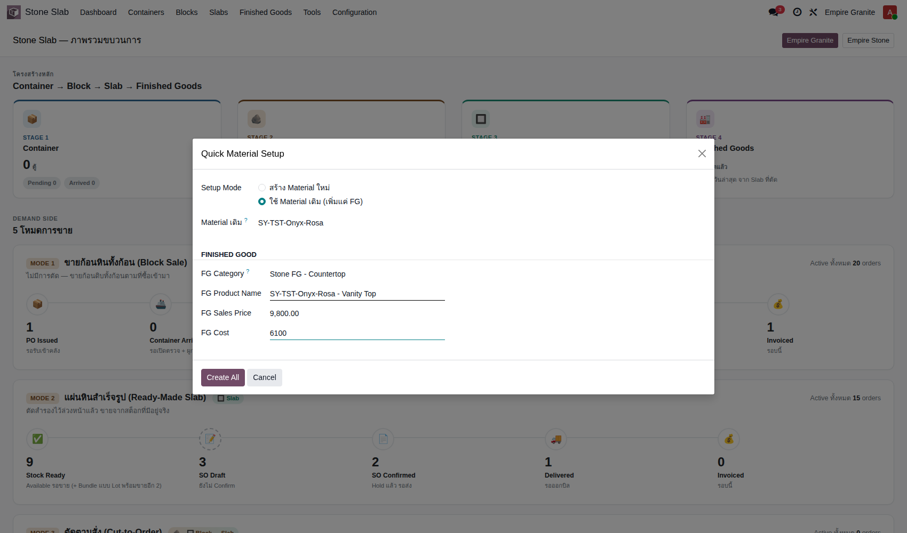 |
| TC-PS-12 | ตรวจว่า Finished Good ใหม่ถูกเพิ่มเข้า Material เดิมโดยไม่สร้าง Slab/Block ซ้ำ | ทำ TC-PS-11 เสร็จแล้ว |
|
- | เห็น Finished Good ตัวใหม่ ("Vanity Top") เพิ่มเข้ามาเป็นแถวที่ 4 — Slab Product และ Block Product ยังเป็นตัวเดิม ไม่ถูกสร้างซ้ำ | High | 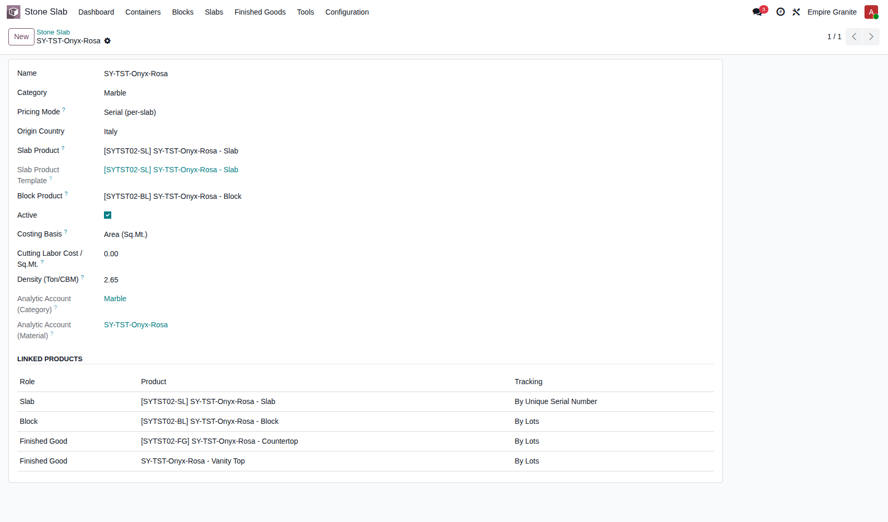 |